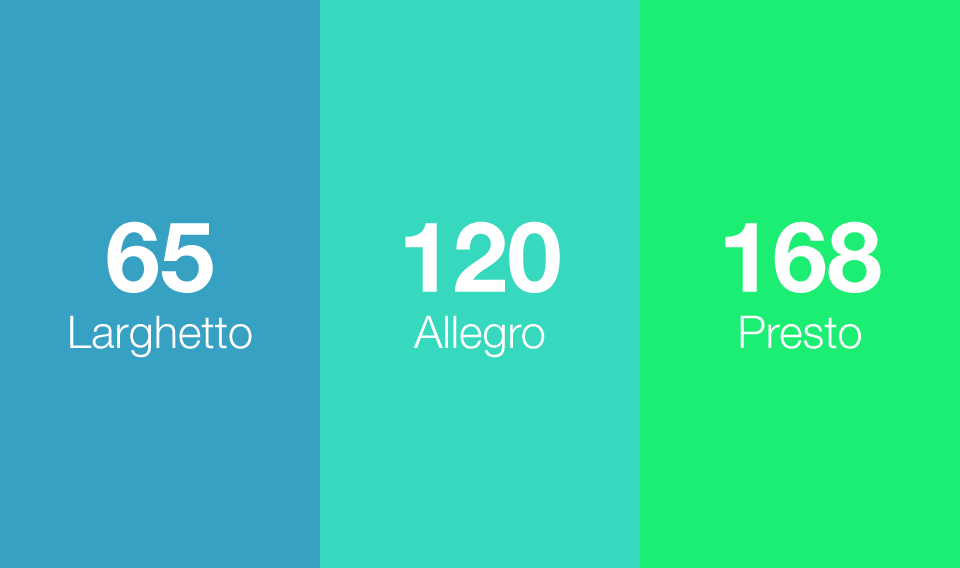
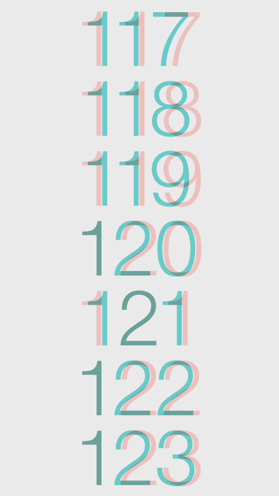
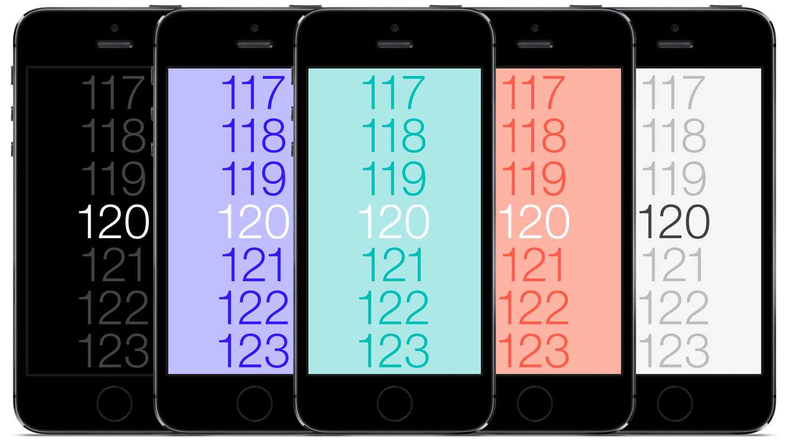

BPM
The apps I love are both functional and beautiful. Functional in that they are useful in performing a task. Beautiful in terms of aesthetics and elegance in user experience. When designed right, these digital tools can truly be a joy to use.
I’d been searching for years for a metronome app that provided this kind of experience, with no luck. I craved something simpler, aesthetically and functionally, than what was out there. So I set out to create my own, with a couple of goals in mind:
- Make performing the primary functions as thoughtless as possible. For a metronome, these functions are selecting a tempo, playing, and stopping. Even a split second of locating a button to tap on the screen makes a huge difference.
- Avoid using skeuomorphs. We’re no longer bound by the same physical controls (pendulums, dials, buttons) that limited metronomes in the past, so why insist on putting those same controls into digital form, as so many other apps do? I’d rather innovate.
The interface
The first interface concept displayed just the tempo in the center of the screen along with the tempo marking (e.g. Largo or Allegro). A swipe up or down anywhere on the screen increased or decreased the tempo, and a tap anywhere would toggle play and pause.
The concept also featured a background colormap that would change according to the tempo.

I coded a proof of concept to test the interaction.
Quickly, I could see the benefit of this concept was the ease of starting and stopping playback.
But, this concept also had one major drawback—setting the tempo. Blindly swiping up or down without an indication of how far you needed to swipe made it hard to select the precise tempo you wanted.
The problem was a lack of visual cues to indicate how far to swipe for a certain tempo. With a picker, however, tempo numbers could be laid out spatially and selecting one would cease to be a guessing game.
The final interface functions as a picker, but was implemented using a scrolling table view so I could style it the way I wanted (the default picker control allows for very little customization).
I kept the ability to tap to toggle play and pause, and also added visual differentiation between the states—now, the picker disappears when the metronome is playing (leaving only the current tempo) and reappears when the metronome is stopped.
The font
With such a typographically-driven interface, I knew how important the choice of font was.

Trying out numerous typefaces in mockups and code, I kept returning to my first instinct of Helvetica Neue Light. It’s consistent with the iOS platform, relatively neutral, and still very beautiful to look at.
Just one problem, though. The default kerning on the numerals was pretty bad. I knew I had to do something about it. After a few days of wrestling with possible solutions, it occurred to me that the lock screen clock’s numerals were in Helvetica Neue Light. Yet the kerning wasn’t horrible.
It turns out Apple was using a custom version of Helvetica Neue Light that solved for exactly this issue. Fortunately, I was able to track down this font and include it in the app.
The sound
Just as I had eschewed graphical skeuomorphs in the interface, I wanted to avoid using aural skeuomorphs—sound clips that simply replicate an analog tick. Instead, I focused solely on the aesthetics of the sound. And I had a very particular beep in mind.
I knew the choice of sound would play a huge role in a user’s experience with (and ultimately their emotional connection to) the app. When I couldn’t find the sound I was looking for, I recorded my own, using a Roland TR-808 digital instrument in GarageBand. I then edited the audio clip in Audacity for pitch (A440) and amplitude curve.
Themes
While I ultimately had to nix the idea of changing background hue according to the tempo (this looked odd with the picker), I still wanted to find a way to utilize colors, which provided a playful touch.
In the final version, you can long-press anywhere on the screen to switch between the themes.

Branding
Iconography was a challenge, since the app interface doesn’t have any visual elements, other than the typography.
The interface does, however, strongly feature color, which is an important part of the app’s brand.
Using a play icon and long shadow, I was able to incorporate color into an app icon in a way that’s also abstractly representative of the interface.
When it came to the name, like other aspects of the app, I wanted to keep it minimal. The name BPM (beats per minute) is a term that’s synonymous with tempo for musicians, and indicates exactly what the app provides. The app description, shown on the App Store, was kept very direct as well:
Scroll to set tempo. Tap anywhere to play. Long press to change theme.
BPM is a product I designed for myself. Granted, it may not be for everyone. After all, it leaves out meter and beat subdivisions, which are common features of more advanced metronomes.
Often, though, having fewer features and options can lead to a more focused and elegant experience. I believe this is the case with BPM. It does one thing, and does it well.
I started this project with a clear vision for what I wanted the product to be. Technical challenges arose, but the design integrity was never compromised. I always found a way to engineer it in the end, and it resulted in a product that I love to use. For that, I’m very proud.